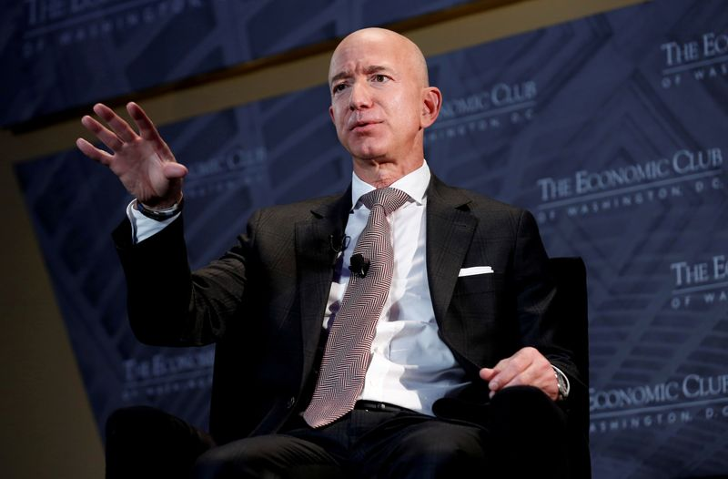

Bezos, Musk top Forbes’ record-setting billionaire list
By Sheila Dang
(Reuters) – Forbes’ annual world’s billionaires list includes a record-breaking 2,755 billionaires, with Amazon.com Inc founder Jeff Bezos topping it for the fourth consecutive year, the media company said on Tuesday.
The ranks of the ultra-wealthy are expanding after a year in which the coronavirus pandemic upended world economies and threatened the livelihoods of people across the globe.
This year’s billionaires are worth a combined $13.1 trillion, up from $8 trillion last year, Forbes said.
'The very, very rich got very, very richer,' said Forbes’ Chief Content Officer Randall Lane, in an interview with Reuters Video News.
Tesla Chief Executive Elon Musk jumped into second spot on the list, up from 31st last year.
Bernard Arnault, chief executive of luxury goods firm LVMH, Microsoft founder Bill Gates and Facebook Chief Executive Mark Zuckerberg round out the top five of the world’s richest billionaires.
Investor and business tycoon Warren Buffett fell out of the top five for the first time in over two decades, as tech executives dominate the Forbes rankings.
This year’s list has 493 newcomers, including Whitney Wolfe Herd, chief executive of dating app Bumble, which went public this year.
(Reporting by Sheila Dang, editing by Ed Osmond)
Posted On: 2021-04-06T00:00:00

Content Date: 2021-04-06
Download Date: 2021-04-17
Document ID: L0C04A7OJ